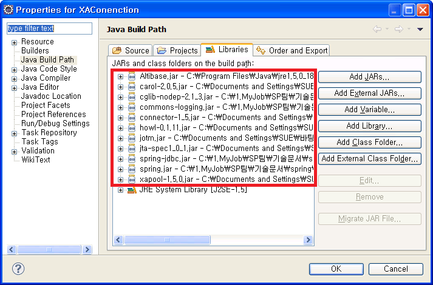

Spring Framework를 이용하면 다양한 방법으로 트랜잭션을 처리할 수 있다.
먼저, 트랜잭션 관리자(TransactionManager)를 bean 설정 파일에 지정해주고, 트랜잭션 처리를 해주면 된다.
트랜잭션 처리는 필요에 따라 소스 코드 내에서 직접 프로그램을 구현할 수 있고, 또 다른 방법으로 bean 설정 파일에서 선언적으로 처리할 수 있다.
Spring Framework는 데이터베이스 연동 기술에 따라 여러 PlatformTransactionManager 인터페이스의 구현 클래스를 제공하는데 이 클래스들을 TransactionManager로 지정하면 된다. 예를 들어, 로컬 트랜잭션을 처리하기 위해서 DataSourceTransactionManager 클래스를 TransactionManager로 지정하고, 분산 트랜잭션을 처리하기 위해서는 JtaTransactionManager 클래스를 TransactionManager로 지정하면 된다.
TransactionManager를 지정한 후 트랜잭션을 선언적으로 처리하기 위해서는 bean 설정 파일에 트랜잭션을 처리하는 bean을 정의하면 된다. 이때, 이 bean에 TransactionProxyFactoryBean 클래스를 지정하여 각 메소드이름 별로 트랜잭션을 처리하는 방법을 지정해주면 된다.
본 문서에서는 이 클래스들을 TransactionManager를 설정하는 방법과 bean 파일을 이용해서 선언적으로 트랜잭션을 처리하는 방법에 대해 살펴본다.
DataSourceTransactionManager 설정
PlatformTransactionManager 구현 클래스 중 DataSourceTransactionManager 클래스를 이용하여 TransactionManager를 지정할 수 있다. bean 설정 파일(applicationConext.xml)에 transactionManager bean에 org.springframework.jdbc.datasource.DataSourceTransactionManager 클래스를 지정해 주면 된다.
이 후, 선언적으로 트랜잭션을 처리할 때 트랜잭션을 처리하는 bean의 property중 서 transactionManager에 위해서 정의한 transactionManager bean을 지정해주면 된다.
예) DataSourceTransactionManager의 applicationContext.xml 파일
…
<bean id="transactionManager"
class="org.springframework.jdbc.datasource.DataSourceTransactionManager">
<property name="dataSource" ref="dataSource"/>
</bean>
<bean id="txProxyTemplate" abstract="true"
class="org.springframework.transaction.interceptor.TransactionProxyFactoryBean">
<property name="transactionManager" ref="transactionManager" />
<property name="transactionAttributes">
<props>
<prop key="get*">PROPAGATION_REQUIRED, readOnly </prop>
<prop key="add*">PROPAGATION_REQUIRED</prop>
</props>
</property>
</bean>
<bean id="accountService" parent="txProxyTemplate">
<property name="target">
<bean class="com.altibase.banking.AccountService">
<property name="accountDao" ref="accountDao"/>
</bean>
</property>
</bean>
…
트랜잭션을 처리하기 위해서는 트랜잭션을 관리(TransactionManager)하는 방법 뿐만 아니라, 트랜잭션을 처리하는 방법도 기술해야 하는데 위의 예제는 트랜잭션 처리 방법 중 springframework.transaction.interceptor.TransactionProxyFactoryBean 클래스를 이용하여 bean 설정 파일(applicationConext.xml)에 선언적으로 트랜잭션을 처리하는 방법으로 작성되었다.(해당 내용은 아래에 자세히 설명한다.)
TransactionProxyFactoryBean을 이용한 선언적 트랜잭션 처리
TransactionProxyFactoryBean 클래스는 트랜잭션을 처리하기 위한 여러 속성들을 제공하는 클래스이다.
bean 설정 파일(applicationContext.xml)에 TransactionProxyFactoryBean 클래스의 bean을 설정해주고, 트랜잭션을 처리하는 방법을 각 메소드 별로 정의하여 선언적으로 트랜잭션을 처리할 수 있다. 이 트랜잭션 처리를 위한 bean의 <property>에 지정하는 트랜잭션 관련 속성들은 다음과 같다.
1. target
프로퍼티를 통해 트랜잭션을 적용할 대상 객체를 설정한다.
2. transactionManager
위에서 정의한 TransactionManager를 설정한다.
3. transactionAttrubutes
트랜잭션 속성을 설정할 때 사용되는 Properties 객체를 설정한다. 이때 트랜잭션을 적용할 메소드 단위로 <prop> 태그를 이용하여 트랜잭션 속성을 정의한다.
<prop>의 태그 값은 다음과 같은 형식으로 지정한다.
PROPAGATION, ISOLATION_NAME, readOnly, timeout, +Exception, -Exception
<prop> 태그 값의 각 항목에 대한 설명은 다음과 같다.
항목 |
설명 |
|---|---|
PROPAGATION |
트랜잭션 전파 규칙을 명시. 필수항목. |
ISOLATION_NAME |
ISOLATION 속성을 설정. 선택항목. |
readOnly |
readOnly가 사용되면 트랜잭션을 읽기 전용으로 설정 |
timeout |
트랜잭션의 타임 아웃 시간을 초 단위로 설정한다. |
+,-Exception |
ROLLBACK 규칙을 설정. +Exception은 해당 Exception이 발생하더라도 COMMIT을 수행하고 --Exception은 해당 Exception이 발생하면 ROLLBACK을 수행한다. |
다음은 TransactionProxyFactoryBean 클래스를 이용하여 트랜잭션 속성들을 정의한 bean 설정 파일(applicaionContext.xml)이다.
예) DataSourceTransactionManager의 applicationContext.xml 파일
…
<bean id="transactionManager"
class="org.springframework.jdbc.datasource.DataSourceTransactionManager">
<property name="dataSource" ref="dataSource"/>
</bean>
<bean id="txProxyTemplate" abstract="true"
class="org.springframework.transaction.interceptor.TransactionProxyFactoryBean">
<property name="transactionManager" ref="transactionManager" />
<property name="transactionAttributes">
<props>
<prop key="get*">PROPAGATION_REQUIRED, readOnly </prop>
<prop key="add*">PROPAGATION_REQUIRED</prop>
</props>
</property>
</bean>
<bean id="accountService" parent="txProxyTemplate">
<property name="target">
<bean class="com.altibase.banking.AccountService">
<property name="accountDao" ref="accountDao"/>
</bean>
</property>
</bean>
…
분산 트랜잭션 처리
Spring에서 JOTM(Java Open Transaction Manager)을 이용하면 분산 트랜잭션을 처리할 수 있다. 이 때 JOTM과 연동하기 위해서는 먼저, Spring에서 제공하는 JotmFactoryBean을 등록해야 한다. 그리고 TransactionManager로는 분산 트랜잭션을 제공하는 JtaTransactionManager를 사용하면 된다.
뿐만 아니라, 분산 트랜잭션을 처리하기 위해서는 분산트랜잭션을 제공하는 DataSource를 사용해야 하는데, JOTM에서 제공하는 org.enhydra.jdbc.pool.StandardXAPoolDataSource를 사용할 수도 있지만, 본 문서에서는 ALTIBASE에서 제공하는 Altibase.jdbc.driver. ABXADataSource를 이용하여 분산 트랜잭션을 처리하는 방법에 대해 설명한다.
다음은 org.springframework.transaction.jta.JtaTransactionManager와 Altibase.jdbc.driver.AltibaseXADataSource를 이용하여 분산 트랜잭션을 처리하는 예제이다.
1. AltibaseXADataSource를 이용하여 DataSource를 지정
2. JotmFactoryBean을 지정
3. TransactionManager로 JtaTransactionManager 지정
4. TransactionProxyFactoryBean 클래스를 이용하여 선언적 트랜잭션 처리하는 bean을 지정
예) XAConnection의 applicationContext.xml 파일
…
<bean id="dataSource1" class="Altibase.jdbc.driver.AltibaseXADataSource">
<!-- connection url-->
<property name="url" value="jdbc:Altibase://192.168.1.35:21129/mydb"/>
<!-- DB 사용자 계정 설정 -->
<property name="user" value="sys"/>
<!-- DB 사용자 패스워드 설정 -->
<property name="password" value="manager" />
</bean>
<bean id="dataSource2" class="Altibase.jdbc.driver. AltibaseXADataSource ">
<!-- connection url-->
<property name="url" value="jdbc:Altibase://127.0.0.1:20300/mydb"/>
<!-- DB 사용자 계정 설정 -->
<property name="user" value="sys"/>
<!-- DB 사용자 패스워드 설정 -->
<property name="password" value="manager" />
</bean>
<bean id="accountDao1" class="com.altibase.banking.AccountDao">
<property name="dataSource" ref="dataSource1"/>
</bean>
<bean id="accountDao2" class="com.altibase.banking.AccountDao">
<property name="dataSource" ref="dataSource2"/>
</bean>
<bean id="jotm" class="org.springframework.transaction.jta.JotmFactoryBean"/>
<bean id="transactionManager"
class="org.springframework.transaction.jta.JtaTransactionManager">
<property name="userTransaction" ref="jotm"/>
</bean>
<bean id="txProxyTemplate" abstract="true" class="org.springframework.transaction.interceptor.TransactionProxyFactoryBean">
<property name="transactionManager" ref="transactionManager" />
<property name="transactionAttributes">
<props>
<prop key="get*">PROPAGATION_REQUIRED, readOnly</prop>
<prop key="add*">PROPAGATION_REQUIRED</prop>
</props>
</property>
</bean>
<bean id="accountService" parent="txProxyTemplate">
<property name="target">
<bean class="com.altibase.banking.AccountService">
<property name="accountDao1" ref="accountDao1"/>
<property name="accountDao2" ref="accountDao2"/>
</bean>
</property>
</bean>
…
예제에 포함되어 있는 XAConnection 프로젝트를 실행하기 위해서는 기존에 추가했던 jar 파일 이외에 JOTM에 대한 jar 파일들을 더 추가해야 한다.

JOTM에 관련된 파일들은 http://forge.ow2.org/projects/jotm/ 사이트에서 다운로드 받을 수 있다.
다운로드 후 압축을 풀면 jar 파일들이 있는데 이중 carol-2.0.5.jar, connector-1_5.jar, howl-0.1.11.jar, jotm.jar, jta-spec1_0_1.jar, xapool-1.5.0.jar 파일을 프로젝트에 추가해주면 된다. (위의 jar 파일의 이름은 다운로드 받은 JOTM 버전에 따라 이름이 다를 수 있다.)
그 외 cglib-nodep-2.1.3.jar 파일이 별도로 필요하다.
{kind=link}